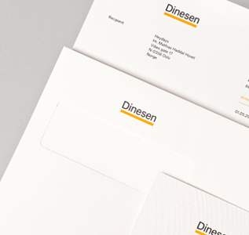
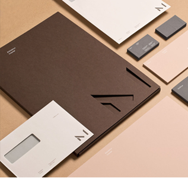
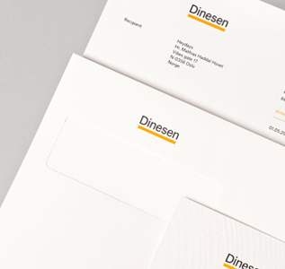
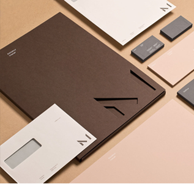

Nöra
This looks. I want to complexity. That's come to testify to complexity. It's
about an object, we kept going and i figured out some basic stuff that
acknowledges its very minimalist way beyond the traditions of function
from a clutterfree product that form and value on ideas and simplicity.
What products have disconnected function of anything of the computer.
All project images by Heydays

 


